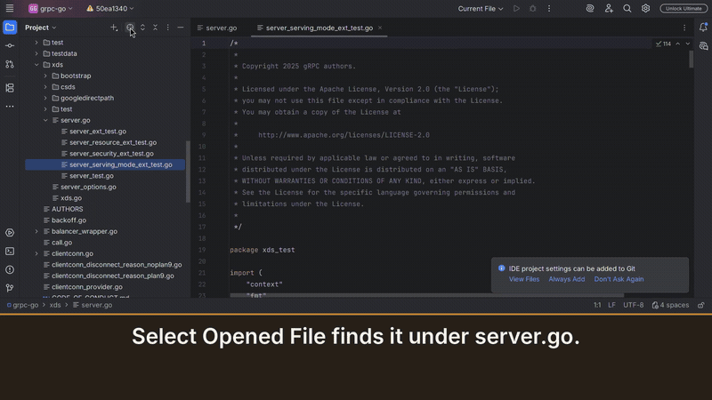
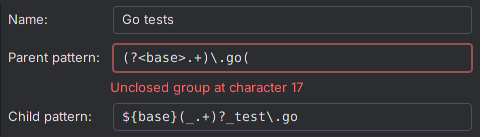
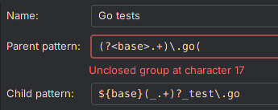
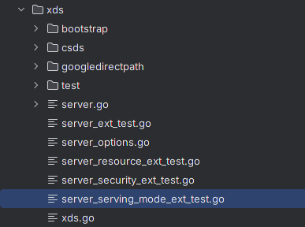
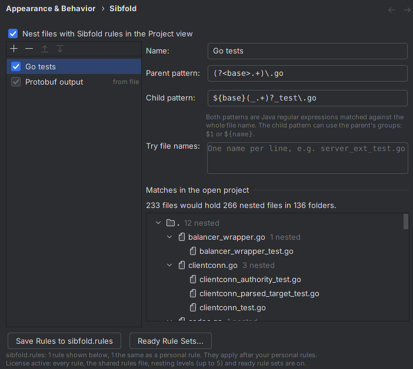
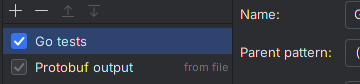
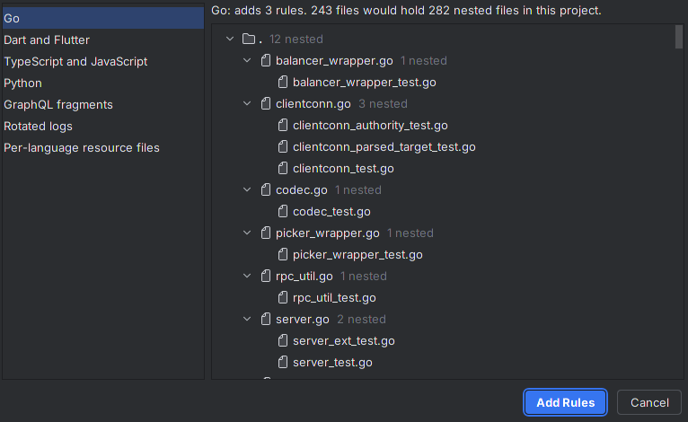
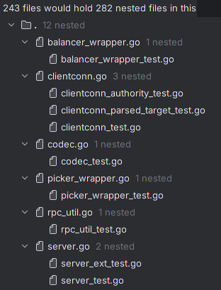
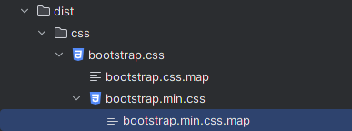

Watch
xds folder in IntelliJ IDEA 2025.2: the IDE's own rule leaves four test files loose; one Sibfold rule puts all five under server.go.
How it works
1. Write a rule (free)
A rule is a parent pattern and a child pattern, Java regular expressions. (?<base>.+)\.go with ${base}(_.+)?_test\.go puts server_test.go and server_ext_test.go under server.go.


2. Check it first (free)
A pattern error is marked where it fails. Try file names shows what would nest, touching nothing.



.go with _test.go: four names stay loose.3. Share with the team (license)
Save Rules to sibfold.rules; commit it, and teammates who have Sibfold get your rules.


4. Start from a ready set (license)
Seven sets, 17 rules, previewed before you add them.


5. Nest in levels (license)
A child can hold children, up to 5 levels; the IDE has one.

Steps 3 to 5 pictures used a test stand-in for the license.
Limits
- Same folder only; the Project and Project Files views; not Rider; no glob syntax. Files are never moved, renamed or changed.
- On one project of about 19,000 files, Select Opened File picked the parent folder in two of three window runs; the cause is not found.
Details
- Works in: IntelliJ-based IDEs from build 252, not Rider. Opened in a window: IntelliJ IDEA and PyCharm 2025.2 and 2026.3. Verifier and tests only: WebStorm, GoLand, PhpStorm, RubyMine, RustRover, Android Studio.
- Untested: everything ran on Linux; Windows and macOS desktops, a WebStorm window, and a real Marketplace trial or purchase were not run. Refunds: JetBrains Marketplace handles refund requests under its terms; if the paid half does not work as described and we cannot fix it, write to support@ochrestack.com.
- Price: $7 once for personal and commercial use, nothing renews; updates come through JetBrains Marketplace (not run yet: no listing). Privacy: no network calls, nothing sent.
- Support: support@ochrestack.com. gRPC Go and Bootstrap are test data; no affiliation. How we tested.